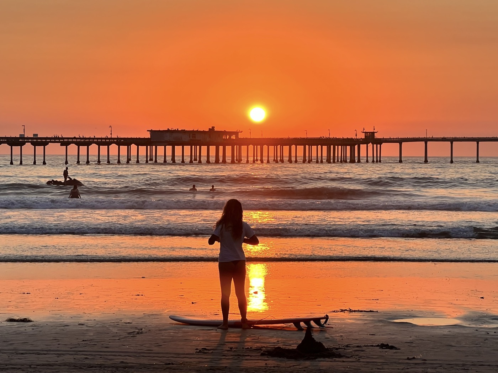

Sunset Post

San Diego vaut bien un détour! Je pose mon vélo Salida dans le quartier Ocean Beach. Beachfront : je suis à 50m de la plage. Ambiance détendue, alternative voire hippie, surf. Je fais de très chouettes rencontres, j'ai besoin de parler de mon aventure. Je fais aussi le plein de sensations sans être très entreprenant dans mes activités. 40 jours dans les étendues sauvages, on s'enivre vite dans une grande ville.Le corps me montre sa fatigue. Un beau blues en somme : je suis prêt pour le retour!